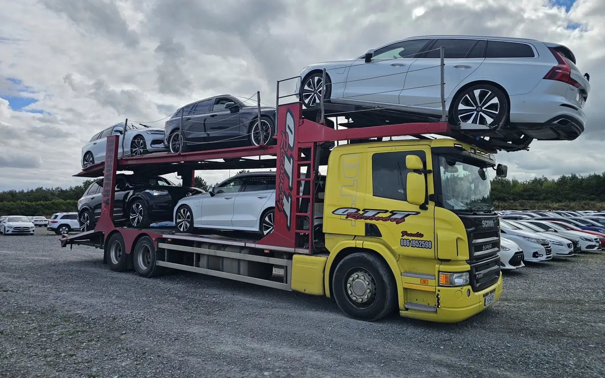
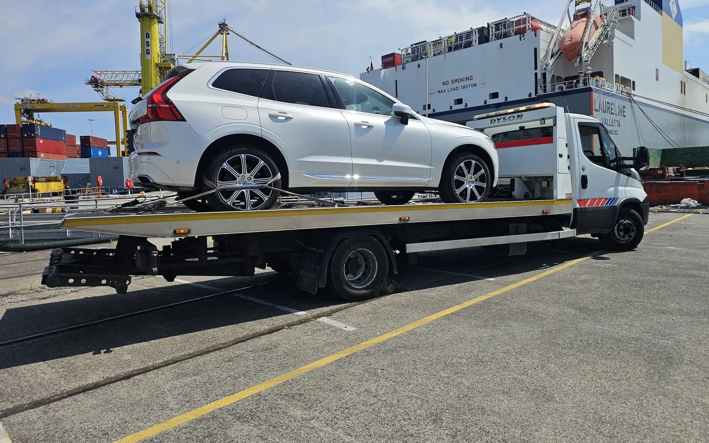

CAR TRANSPORTER
For batches of cars
Our two-deck Scania transporter takes up to six cars at once. The most cost-effective way to move a batch of vehicles.

Transport for dealerships, importers and fleets, up to six cars at a time. We collect from the docks, move stock between dealerships and deliver across Ireland.
When you have more than one car to move, a single recovery truck isn’t the answer. Our car transporter moves up to six cars in one trip, which keeps the cost per car down and gets your stock where it needs to be sooner.

We collect newly arrived and imported vehicles from the docks and deliver them straight to your premises, a storage compound or a prep centre.
Moving cars between branches, swapping stock with another dealer or getting a sold car to its new owner — we handle one-off moves and regular runs.
Our two-deck Scania transporter takes up to six cars at once. The most cost-effective way to move a batch of vehicles.
Ideal for one-off moves, high-value vehicles and cars that don’t run. Strapped down and delivered door to door.
How many vehicles, makes and models, where they’re collected from and going to, your dates, and whether they all run.
Use the quote form ↓We work out the loads and the best truck for the job, then confirm the price and timings with you.
Your vehicles are loaded, secured and delivered. We keep you updated from collection to drop-off.

Fill this in and press send — it opens a pre-written email to our team in your email app. Prefer to talk? Call 086 195 2598.
Our two-deck car transporter takes up to six cars at once. For bigger moves, tell us how many vehicles you have and we’ll plan the loads.
Yes. We collect vehicles from the docks and deliver them to your premises, a compound or a prep centre.
Yes. Non-runners, damaged and high-value cars can go on our flatbed. Let us know when you send the job details.
Yes. We deliver throughout Ireland.
Yes. Tell us your typical volumes and schedule and we’ll quote for one-off or recurring work.
Use the form on this page, email info@ottrecoverybreakdown.ie or call 086 195 2598 with the number of vehicles, collection and delivery points and your dates.
Dock collections. Dealer transfers. Multi-car transport.